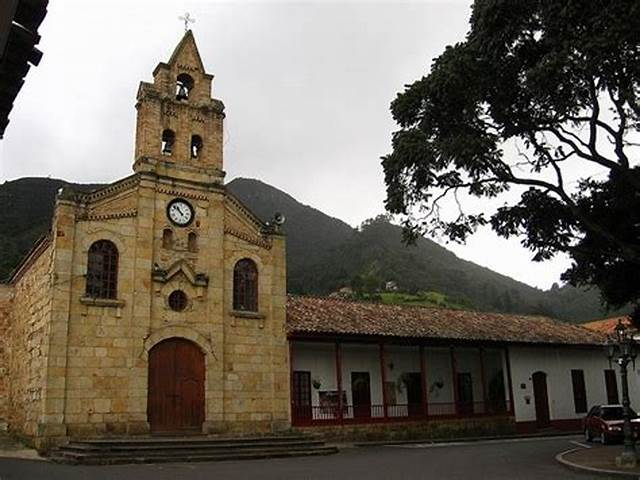

Historia
En el siglo XVI se reconocieron las tierras de los indígenas, se midieron sus estancias y se limitaron las propiedades.
En 1653, el pueblo de Sopó fue fundado por Fray Francisco Chacón, quien trasladó a los indios que vivían en los antiguos
poblados de Sopó, Cueca y Meusa a este nuevo sitio.
El territorio del Valle de Sopó, en tiempos del imperio de la civilización muisca, estuvo conformado políticamente por
tres territorios independientes entre sí: Sopó, Cueca y Meusa.
El Cacicazgo de Sopó: extendido sobre la parte occidental del Valle.
Cueca: ocupaba la zona central.
Meusa: Sus territorios estaban ubicados en el área oriental.
Su nombre en lengua chibcha significa "Piedra o Cerro Fuerte".